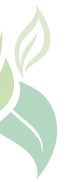
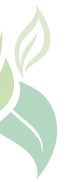

Woman Development Future Health Climate Change


About us

This site is funded as a result of the grant competition of the Ministry of Ecology and Natural Resources of the Republic of Azerbaijan and the State Support Agency for Non-Governmental Organizations of the Republic of Azerbaijan entitled "International initiatives related to COP29" of the Public Union "Ekomed" "Biodiversity and climate change: environment, energy systems It was created for the "Women, Development, Future" Public Union within the framework of the "sustainability" project. The opinions and considerations reflected on the site belong to the author and may not reflect the official position of the Ministry of Ecology and Natural Resources of the Republic of Azerbaijan, the State Support Agency for Non-Governmental Organizations of the Republic of Azerbaijan.

From founder

Member of the COP 29 Organizing Committee
Member of the COP 29 Organizing Committee
Gulshan Akhundova is a member of the COP 29 Organizing Committee according to the change in Decree No. 4264 dated January 13, 2024 of the President of the Republic of Azerbaijan. Mrs. Gulshan graduated from the Azerbaijan State Medical University with a degree in medicine and pharmacist, she is fluent in English, Russian, Turkish and French (initial), Arabic (initial). She has worked for Humanitarian Organizations such as Merlin, Medicine du Monde and Medicines Sans Frontiers the Belgium, Netherlands, CHF International, IRD. She also worked in Caucasian projects of private companies such as Berlin Chemie and Bechtel National. She has high work standards and is a quick learner, comfortable with a high degree of independence, problem solving and responsibility, flexible and willing to work in a variety of capacities and locations. Proficient in classical piano, Word, Excel, Power Point, etc. has experience in many computer programs including. Since 2013, she is the Founder and Chairwoman of the Women, Development, Future Public Union.Akhundova
Publications in the press
27 fevral 2024
28 Fevral 2024
11 Mart 2024 PESTEL Analysis
27 mart 2024
8 Aprel 2024
12 Aprel 2024
19 Aprel 2024
29 Aprel 2024
23 May 2024
30 May 2024
20 iyun 2024
21 iyun 2024
24 iyun 2024
10 İyul 2024
24 Iyul 2024
26 iyul 2024
Avtivities

 



News